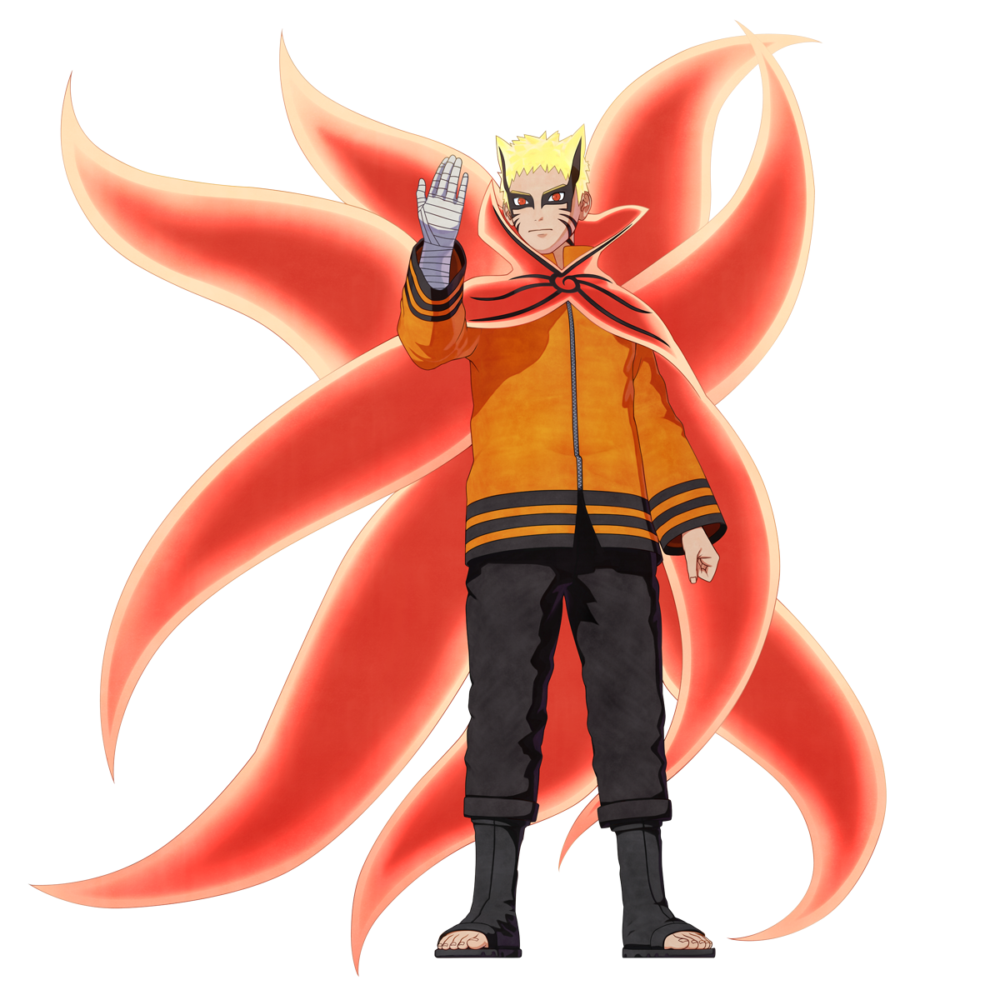

UNIDAD 02 · NARUTO
RETOS Y
PRÁCTICAS
Aquí se mostrarán las prácticas y retos de desarrollo de la Unidad 2.
PRÓXIMAMENTE
UNIDAD 02 · NARUTO
Aquí se mostrarán las prácticas y retos de desarrollo de la Unidad 2.
PRÓXIMAMENTE